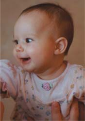

√отовы ли вы стать мамой? |
|
|---|---|
|

—лучаетс€, в молодости женщина делает аборты, так как еще хочет пожить дл€ себ€, а когда, наконец, принимает решение родить, Ѕог ей не дает детей. “аким образом, одного желани€ родить ребенка оказываетс€ недостаточно, хот€ оно и необходимо. |
<Ќа главную> <Ќазад> <ƒалее> |